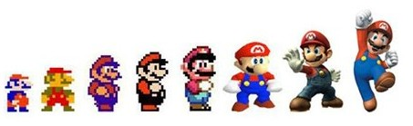

Nintendo Entertainment
Nintendo Co., Ltd., multinationale japonaise basée à Kyoto, est dirigé depuis 2015 par Tatsumi Kimishima après le décès d'Iwata Satoru. L'entreprise se lance dans l'industrie du jeu vidéo au début des années 70. Editant des jeux de bornes d'arcades, elle participe à la création de la première console de salon. Leur toute première console voit le jour en 1977, auquelle en succéderont d'autres, propulsant la société à la tete du marché japonais.
Inventeur des consoles portables, Nintendo est également à l'origine de titres mythiques et donna naissance à des personnages cultes comme Link, Donkey Kong, ou Mario, et .
Origines
La série de jeux vidéo de plates-formes créée par Nintendo met en scène sa mascotte Mario ainsi que, dans beaucoup de jeux, son frère Luigi et d'autres personnages prcincipaux comme Peach ou Browser, dans le royaume champignon. Il s'agit de la première série de la franchise Mario. Au moins un jeu Super Mario est sorti sur chaque console majeure de Nintendo depuis le premier épisode, Super Mario Bros., sorti en 1985 sur Nintendo Entertainment System.
Les jeux Super Mario ont été vendus à plus de 262 millions d'exemplaires dans le monde jusqu'en mars 2011, ce qui en fait la série de jeux vidéo la plus vendue de tous les temps.
Évolution
Dans les jeux en 2D de la série Super Mario, le gameplay consiste principalement à sauter sur les ennemis et éviter leurs attaques, les niveaux sont linéaires, et habituellement divisés en plusieurs parties, dans lesquelles on trouve un certain nombre d'objets cachés et de passages secrets. Les premiers jeux ont des niveaux avec une seule sortie, ce qui force le joueur à aller au prochain niveau. Dans les jeux en 3D, des batailles ont été intégrées.
Super Mario Bros. 3 (1988) est le premier jeu non-linéaire ; Super Mario World (1990) introduit les niveaux à plusieurs sorties, où la sortie que le joueur utilise détermine le chemin qui s'ouvre à lui sur la carte. Dans Super Mario 64, Super Mario Sunshine et Super Mario Galaxy, un monde relie les niveaux du jeu ; plus d'endroits de ce monde sont accessibles à mesure que le jeu progresse.
Parmi les derniers titre de la saga, on trouve Super Mario Galaxy 1&2 : le jeu se passe dans l'espace. Enfin Super Mario Odyssey se déroule à travers toute la planète.
